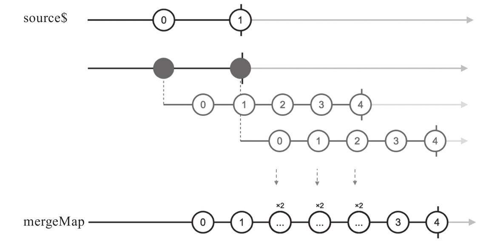

因为mergeMap是map和mergeAll的组合，concatMap是map和concatAll的组合，所以，只要理解mergeAll和concatAll的区别，就可以明白mergeMap和concatMap的区别，如果对这个区别还不了解，可以翻回第5章看一看。
提示
mergeMap在RxJS v4中曾经叫flatMap，很多Rx实现都有flatMap的名称，但是后来RxJS社区觉得flatMap这个词从字面上不好理解，所以从v5开始改名为mergeMap，为了向后兼容，flatMap作为mergeMap的一个别名（alias）存在，所有对mergeMap的使用也可以用flatMap替代。
mergeMap和concatMap不同之处，在于对project参数函数产生的Observable对象的处理，mergeMap对于每个内部Observable对象直接合并，也就是任何内部Observable对象中的数据，来一个给下游传一个，不做任何等待。
使用mergeMap的示例代码如下：
const source$ = Observable.interval(200).take(2); const result$ = source$.mergeMap(project);
对应的弹珠图如图8-14所示。

图8-14 mergeMap的弹珠图
可以看到mergeMap就是把project产生的内部Observable中的数据直接映射给下游，这就是一个“砸平”的动作。
mergeMap能够解决异步操作的问题，最典型的应用场景就是对于AJAX请求的处理。在一个网页应用中，一个很典型的场景，每点击某个元素就需要发送一个AJAX请求给服务器端，同时还要根据返回结果更新网页中的状态，AJAX的处理当然是一个异步过程，使用传统的方法来解决这样的异步过程代码会十分繁杂。
但是，如果把用户的点击操作看作一个数据流，把AJAX的返回结果也看作一个数据流，那么这个问题的解法就是完全另一个样子，可以非常简洁，下面是示例代码：
const sendButton = document.querySelector('#send');
Rx.Observable.fromEvent(sendButton, 'click').mergeMap(() => {
return Rx.Observable.ajax(apiUrl);
}).subscribe(result => {
// 正常处理AJAX返回的结果
});
其中，mergeMap的函数参数部分只需要考虑如何调用AJAX，然后返回一个包含结果的Observable对象，剩下来如何将AJAX结果传递给下游，交给mergeMap就可以了。虽然是一个异步操作，但是整个代码依然是同步的感觉，这就是RxJS的优势。